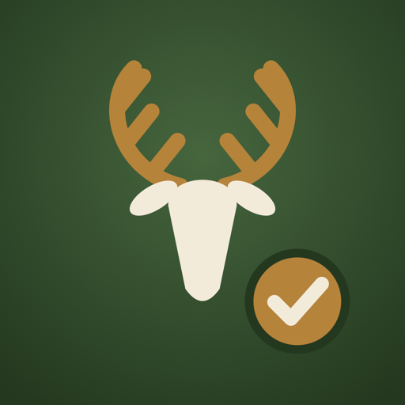

Jägerprüfung-PirschHilfe & Kontakt
Fragen, Fehler oder Wünsche? Schreib mir an andreas.fleps@proton.me. Wenn dir eine Frage oder Erklärung falsch vorkommt, nenne bitte dein Bundesland und die Nummer der Frage, sie steht über dem Fragetext.
Häufige Fragen
Saarland, Hessen und Bayern. Weitere Länder kommen dazu, sobald die Herausgeber der Kataloge zustimmen. Das Bundesland kannst du unter „Mehr“ jederzeit wechseln.
60 Fragen aus allen Fächern mit ihren Erklärungen und eine Probeprüfung. Die Vollversion schaltet alle Fragen, alle Erklärungen, beliebig viele Probeprüfungen und den Hörmodus frei.
Nein. Die Vollversion gilt für alle Bundesländer.
Öffne unter „Mehr“ die Vollversion und tippe auf „Kauf wiederherstellen“. Die App fragt dann bei Apple nach deinem Kauf. Das gilt auch für ein neues iPhone.
Lade in den iPhone-Einstellungen unter Bedienungshilfen › Gesprochene Inhalte › Stimmen › Deutsch eine „Premium“- oder „Erweitert“-Stimme. Die App nimmt sie dann automatisch.
Er liegt nur auf deinem Gerät und ist Teil deines iPhone-Backups. Löschst du die App, ist er weg.
Nein. Die Fragen stammen aus den veröffentlichten Katalogen, die App ist aber kein Angebot der Herausgeber. Über Prüfung und Bestehen entscheidet der Prüfungsausschuss.
Anbieter: Andreas Fleps, Schwärzweg 60, 74219 Möckmühl, Deutschland · andreas.fleps@proton.me
Diese App ist kein Angebot des Freistaats Bayern, des Landes Hessen oder der Vereinigung der Jäger des Saarlandes.